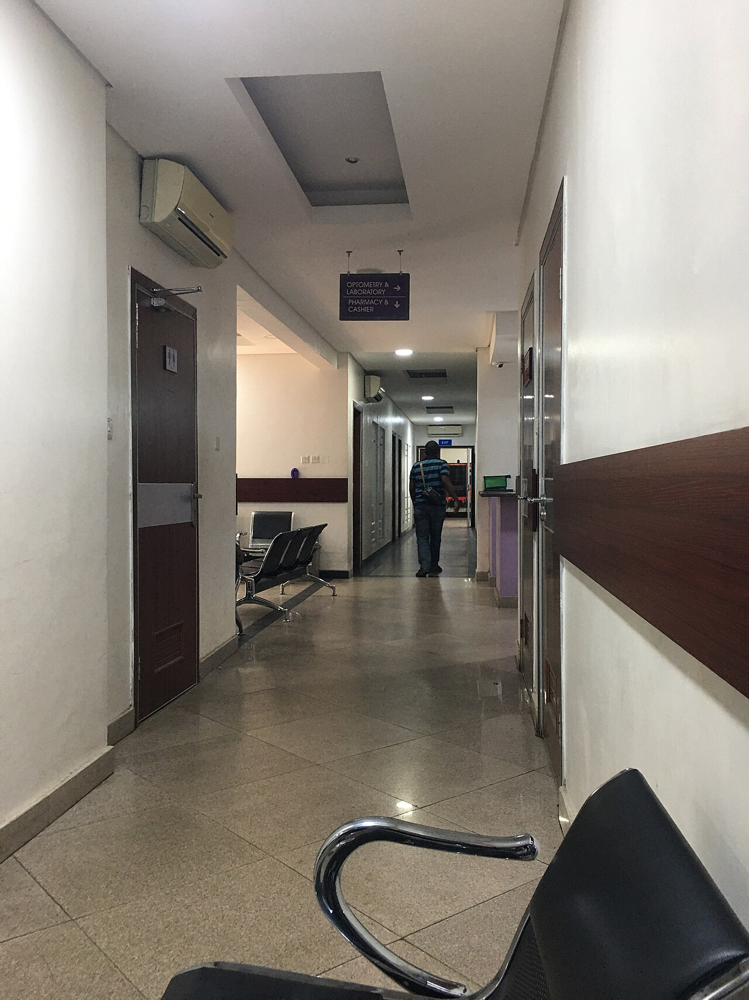

The AI helpline that finds blood in minutes
Tell us the blood group and hospital. Our voice agent calls every blood bank within 25 km in Hindi and holds the units for you. If no bank has it, it calls donors nearby.
Asked already? Track a request

- Freefor families, at any hour
- 25 kmevery bank in range, nearest first
- Hindi and Englishon every call

How a request becomes blood on hold
-
Ranks the nearest banks
By distance from the hospital, and by how recently each one updated its stock.
-
Calls them in Hindi
The agent says it is an AI, then asks for the group, the component and the units.
-
Holds the units
You get the bank's address, the papers to bring and the fee.
No stock anywhere? It calls donors nearby who opted in, a few at a time.
See how a call works. Pick a group and play a sample call.
For families: one request, and we do the phoning
You stay with the patient. RaktDoot calls the banks, gets a clear answer and holds the blood.
- Free, at any hourFamilies never pay RaktDoot.₹0
- Every bank within 25 kmNearest and most recently updated first.25 km
- Units held for youWith the address, the papers to bring and the fee.On hold
- Follow every callWatch it live, or come back later with your request's link.Live
- A fair fee at the bankBanks may charge only a processing fee, at most ₹1,550 a unit3.Capped

For donors: a call only when you can help
- Only for your blood groupwithin 10 km
- Never twice in a weekor 3 months after you give
- Your number stays hiddenfamilies never see it
- Only with your consentopt out any time
On a computer? Scan this to sign up on your phone, so the calls reach you.
For hospitals and blood banks
Free for families. Hospitals and blood banks pay for the calling. Blood itself is never sold.
- Private hospitalsA blood desk that does the phoning for your patients.
- Blood banksDonor recall when a group runs low.
- State blood councilsShortages and units near expiry, across a region.
Safety and privacy, built into every call
-
It says it is an AI
Every call opens by saying it comes from RaktDoot's AI assistant.
-
Donor numbers stay hidden
No family, hospital or bank sees a donor's number. Calls go through us.
-
Only people who said yes
We call donors who signed up and agreed to AI calls, and stop when they opt out.
-
It never asks for money
Not from families and not from donors. Blood is never sold; banks charge only the set fee.
-
Donors get rest
At most one call a week, and none for three months after a donation.
-
Your data, your call
We keep only what a request or a sign-up needs, and delete it when you ask. Read the privacy policy.
Questions
What does RaktDoot cost?
Nothing for families or donors. Hospitals and blood banks pay for the calling. At the bank you pay only the processing fee, at most ₹1,550 a unit.
Is this an emergency service?
No. RaktDoot finds and holds blood. In a medical emergency, call 112 or 108 for an ambulance first.
Why call banks before donors?
Donated blood is tested before use, which takes hours. A bank can hand over a tested unit today.
Which languages does the agent speak?
Hindi and English. More Indian languages are on the way.
Can someone use RaktDoot to reach donors?
No one sees a donor's number, and the agent never asks anyone for money. If a call ever feels wrong, hang up and tell us.
How do I stop the calls or delete my number?
Tell us and we take you off the list and delete your number. The privacy policy says how.